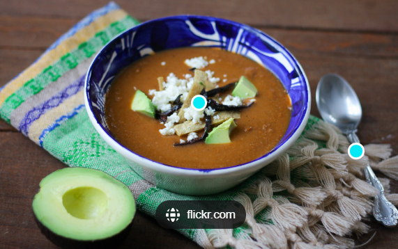

¿Quienes somos?
Somos un grupo de personas que intentamos llevar un estilo de vida mas saludable sin sufrir o obligarnos hacer dietas que a la larga uno va rompiendo. El sentido de esta pagina es mejorar los habitos de salud sin que parezca una tortura o sufrimiento. Estamos aca para mejorar tus habitos que a medida que pasen los años lo agradeceras. Cuerpo sano es igual a mente sana.
Ultima receta subida
Sopa de zapallo a la crema
- Zapallo
- cebolla
- Tomate
- Queso rallado
- Sal y aceite a gusto